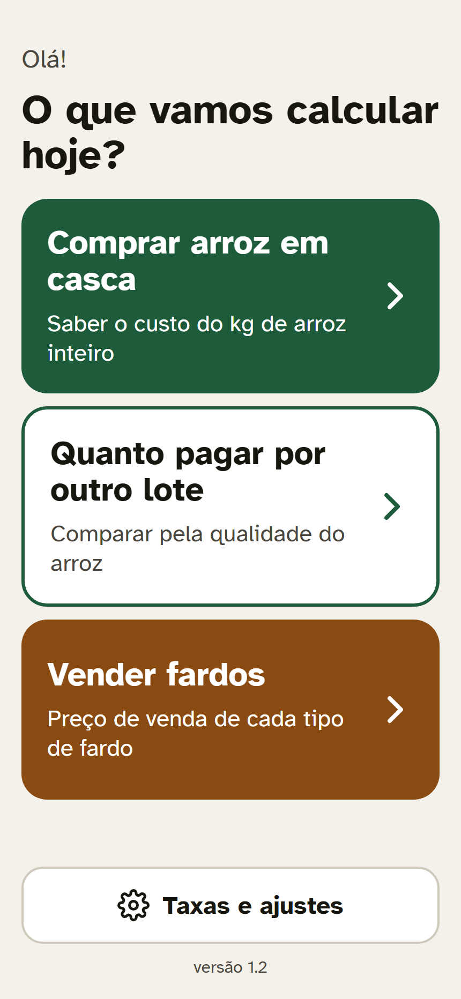
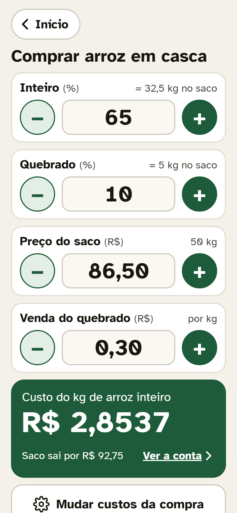
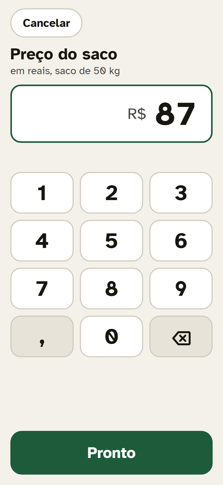
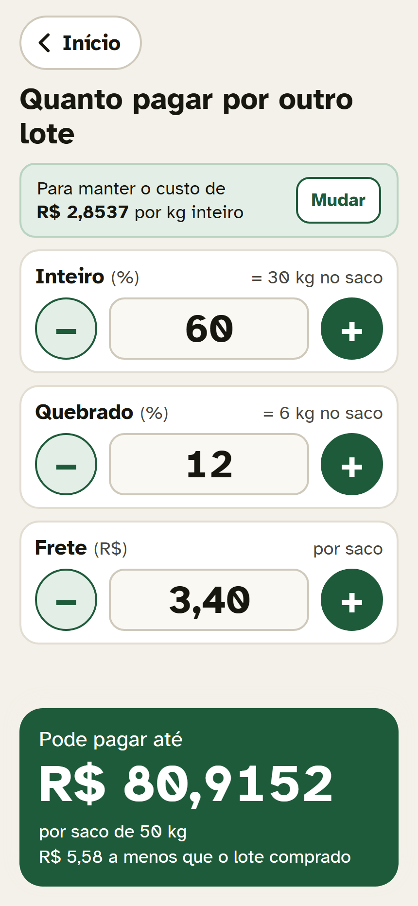
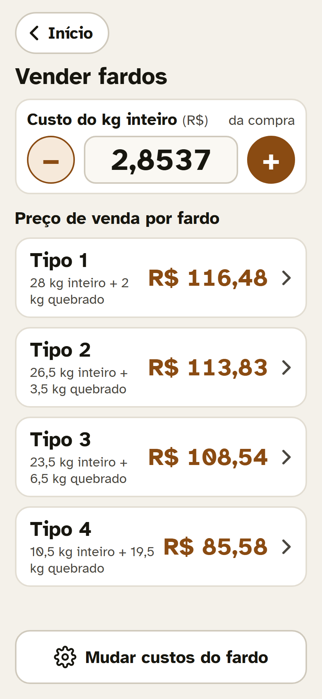
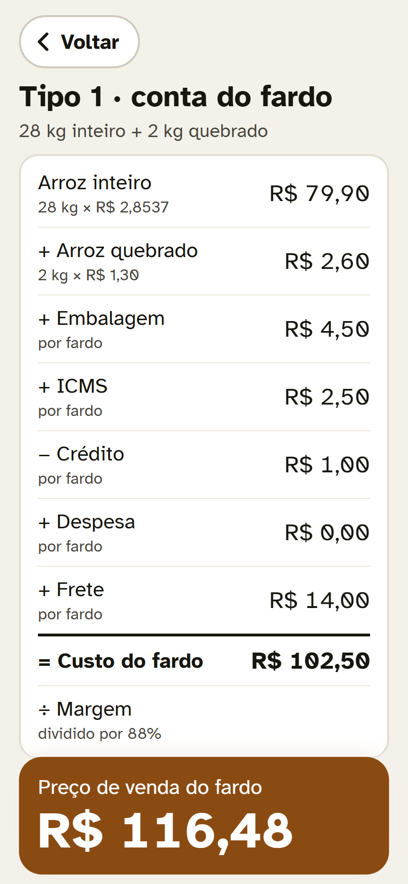
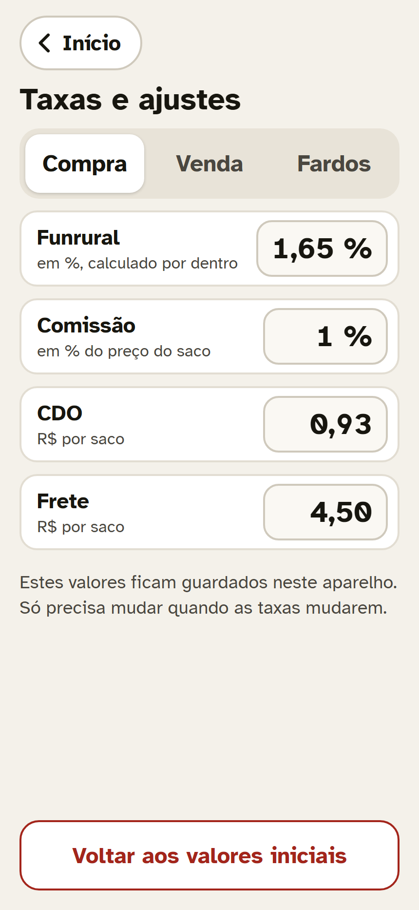
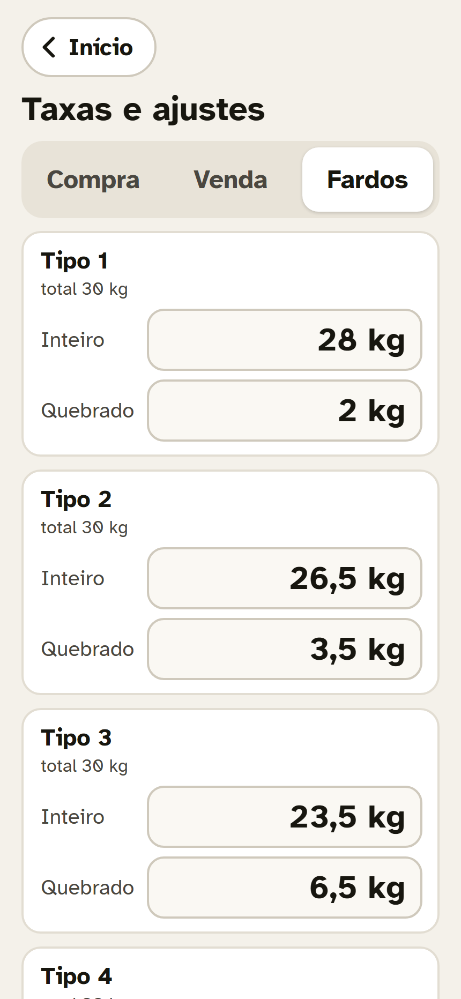
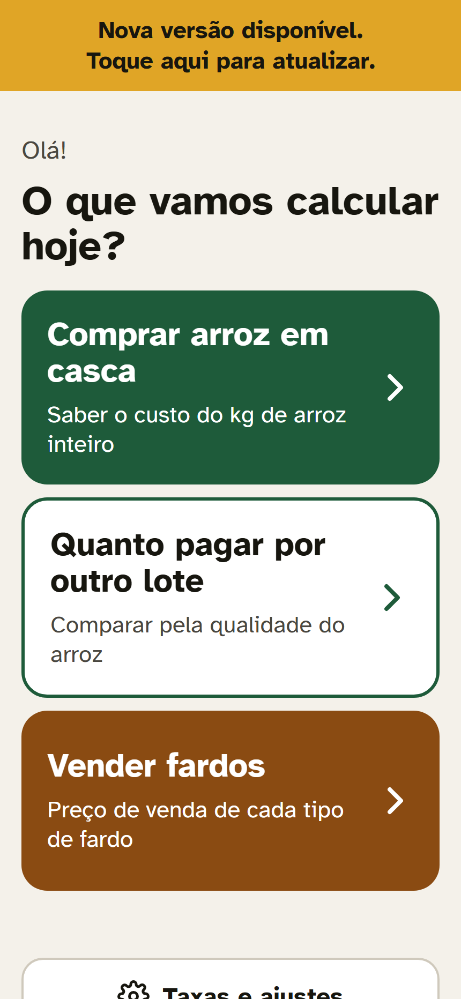

Tutorial de instalação e uso no iPhone e no Android, com a metodologia de cálculo de cada tela.


O app é instalado pelo Safari, sem App Store. Depois de instalado, ele funciona sem internet.
No iPhone, o app instalado e o Safari guardam os valores separados. Valores digitados no Safari não aparecem no app do ícone, e vice-versa.
Além disso, o iPhone pode apagar dados de sites abertos só no Safari que ficam sem uso por alguns dias. O app instalado na Tela de Início não sofre essa limpeza.
Conforme a versão do iOS, o botão Compartilhar fica na barra de baixo ou dentro dos três pontinhos. O caminho é sempre o mesmo: Compartilhar → Adicionar à Tela de Início.
Custo Arroz
Assim fica o ícone na Tela de Início
O app é instalado pelo Chrome, sem Play Store. Depois de instalado, ele funciona sem internet.
Depois de instalar, abra o app uma vez com internet. Em seguida, ligue o modo avião, feche o app e abra de novo pelo ícone: ele deve funcionar normalmente, com todas as contas.
Confira se a página abriu por completo, com internet, e se o endereço está certo. Se usar outro navegador, como Samsung Internet, a opção costuma ficar no menu com o nome Adicionar página a → Tela inicial.
Tudo começa no Início. Os botões grandes levam às três calculadoras; o de baixo leva às taxas.
Início
Comprar arroz em casca: quanto custa o kg de arroz inteiro de um lote.
Quanto pagar por outro lote: o preço máximo de um lote de outra qualidade.
Vender fardos: o preço de venda de cada tipo de fardo.
Taxas e ajustes guarda os valores que mudam pouco: Funrural, comissão, CDO, fretes, custos do fardo e composição dos tipos.
O número versão 1.2, no rodapé, mostra qual versão do app está instalada.
Todo valor mudado fica guardado sozinho no aparelho. Não existe botão de salvar.

Teclado grande
Informe o rendimento e o preço do lote. O app mostra quanto custa cada kg de arroz inteiro.
Os 4 valores do lote
Inteiro (%) e Quebrado (%): o rendimento do lote. Ao lado aparece quanto isso dá em kg num saco de 50 kg.
Preço do saco (R$): o preço pago pelo saco de 50 kg em casca.
Venda do quebrado (R$ por kg): o valor recebido pelo arroz quebrado, que abate o custo.
O quadro verde mostra o custo do kg de arroz inteiro. Toque em Ver a conta para ver no app o mesmo passo a passo da tabela abaixo; Mudar custos da compra leva às taxas.
Funrural "por dentro": ele é calculado sobre o valor bruto, e não sobre o preço. Por isso dá um pouco mais que 1,65% de 86,50.
| Preço do saco50 kg de arroz em casca | R$ 86,50 |
| + Funrural1,65% calculado por dentro: 86,50 ÷ (1 − 0,0165) − 86,50 | R$ 1,4512 |
| + Comissão1% do preço do saco | R$ 0,8650 |
| + CDO e + Fretevalores fixos por saco: 0,93 e 4,50 | R$ 5,43 |
| = Custo do saco | R$ 94,2462 |
| − Venda do quebrado10% de 50 kg = 5 kg × R$ 0,30 | R$ 1,50 |
| = Custo líquido do saco | R$ 92,7462 |
| ÷ 32,5 kg de inteiro (65% de 50 kg) = custo do kg inteiro | R$ 2,8537 |
Para um lote de outra qualidade, o app calcula o preço máximo do saco para manter o mesmo custo do kg inteiro do lote da tela de compra.

Outro lote: 60% inteiro, 12% quebrado
Inteiro (%) e Quebrado (%) do outro lote, e o Frete (R$ por saco) dele.
O quadro de cima lembra o custo do kg inteiro que será mantido. Para mudá-lo, toque em Mudar: ele leva à tela de compra.
A venda do quebrado, o Funrural, a comissão e o CDO vêm da tela de compra e das taxas.
O quadro verde mostra o preço máximo por saco e quanto ele fica acima ou abaixo do lote comprado.
Pagando até esse preço, o kg de arroz inteiro deste lote sai pelo mesmo custo do lote de referência.
| Valor do arroz inteiro60% de 50 kg = 30 kg × R$ 2,8537 | R$ 85,6119 |
| + Valor do quebrado12% de 50 kg = 6 kg × R$ 0,30 | R$ 1,80 |
| = Custo que o saco pode ter | R$ 87,4119 |
| − Frete e − CDO3,40 (deste lote) + 0,93 | R$ 4,33 |
| = Sobra para preço, Funrural e comissão | R$ 83,0819 |
| ÷ (1 + comissão + Funrural por dentro)1 + 0,01 + 1,65 ÷ 98,35 | 1,026777 |
| = Pode pagar até, por saco | R$ 80,9152 |
Com o custo do kg inteiro, o app calcula o preço de venda de cada tipo de fardo.

Os 4 tipos de fardo
O custo do kg inteiro vem da tela de compra ("da compra"). Se quiser simular outro custo, mude-o aqui: aparece o botão Usar este para voltar ao valor da compra.
Cada cartão mostra a composição do fardo e o preço de venda. Toque no cartão para ver a conta.
Mudar custos do fardo leva às taxas de venda: custo do quebrado, embalagem, ICMS, crédito, despesa, frete e margem.

Conta do Tipo 1
| Arroz inteiro28 kg × R$ 2,8537 | R$ 79,9044 |
| + Arroz quebrado2 kg × R$ 1,30 | R$ 2,60 |
| + Embalagem + ICMS4,50 + 2,50 | R$ 7,00 |
| − Crédito + Despesa− 1,00 + 0,00 | − R$ 1,00 |
| + Frete do fardo | R$ 14,00 |
| = Custo do fardo | R$ 102,5044 |
| ÷ Margemdividido por 88% | ÷ 0,88 |
| = Preço de venda | R$ 116,48 |
| Tipo | Inteiro + quebr. | Preço |
|---|---|---|
| Tipo 1 | 28 + 2 kg | R$ 116,48 |
| Tipo 2 | 26,5 + 3,5 kg | R$ 113,83 |
| Tipo 3 | 23,5 + 6,5 kg | R$ 108,54 |
| Tipo 4 | 10,5 + 19,5 kg | R$ 85,58 |
A mesma conta vale para os 4 tipos; muda só a quantidade de arroz inteiro e quebrado no fardo.
Os valores que mudam pouco ficam aqui, em três abas. Toque no número para mudar.

Aba Compra
| Funrural | % calculado por dentro |
| Comissão | % do preço do saco |
| CDO | R$ fixo por saco |
| Frete | R$ por saco |
| Custo do quebrado | R$ por kg |
| Embalagem, ICMS | R$ por fardo |
| Crédito | R$ por fardo (desconta) |
| Despesa, Frete | R$ por fardo |
| Margem | % que divide o custo |
Quantos kg de arroz inteiro e de quebrado vão em cada um dos 4 tipos de fardo.

Aba Fardos
Chegando pelos botões Mudar custos das telas de compra ou de venda, o botão Voltar retorna para lá. No fim da tela, Voltar aos valores iniciais desfaz todas as mudanças; o app pede confirmação antes.
Quando houver uma versão nova, aparece no topo a faixa amarela "Nova versão disponível. Toque aqui para atualizar."
Toque nela: o app recarrega já na versão nova, com todos os valores mantidos. Confira o número no rodapé do Início.
Se a faixa não aparecer logo, feche o app de vez (no iPhone, deslize de baixo para cima e arraste o app para cima) e abra de novo, com internet. A versão nova pode levar uns 10 minutos para chegar.
Depois de instalado e aberto uma vez com internet, o app funciona totalmente sem internet, inclusive em modo avião. A internet só é usada para buscar versões novas.

Faixa de nova versão
Cada valor mudado fica guardado no próprio aparelho, na hora, e continua lá ao fechar o app e nas atualizações.
Os valores ficam só naquele aparelho: não passam para outro celular e não têm cópia na internet. Trocar de celular, desinstalar o app ou apagar os dados do site nos ajustes do celular faz o app voltar aos valores iniciais.
O resultado não mudou depois que alterei uma taxa. Volte à tela do cálculo: ela é refeita na hora com a taxa nova.
Os números ficaram estranhos. Em Taxas e ajustes, use Voltar aos valores iniciais e digite de novo os valores do dia.